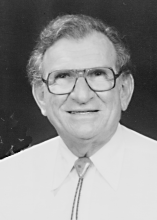

Please note: the AAS Obituaries are temporarily being hosted on this website while their full content is being ingested into the PubPub publishing platform newly adopted by the Bulletin of the American Astronomical Society. When the migration is complete, your existing links will take you to the final, migrated content. Contact peter.williams@aas.org with any questions.
Lawrence Dunkelman (1917-2002)
Lawrence Dunkelman was a pioneer in the development of ultraviolet detectors and optical materials for use in scientific research. He applied these devices to astronomical and geophysical problems and played a significant role in developing the techniques and procedures necessary to make scientific optical measurements in space. Larry died in Tucson, Arizona on 27 January 2002.
Larry Dunkelman was born on 28 June 1917 in Paterson, New Jersey, a first generation American son of Eastern European Jewish immigrant parents who met and married in the United States. His mother, Yetta née Kahn Dunkelman was a Latvian émigré who immigrated to London as a young woman and eventually arrived in New York. She worked in Paterson as a seamstress and tailor, while his father, Max, an émigré from Poland, was a supervisor of silk loom weavers in Patterson. Larry obtained a degree in electrical engineering from Cooper Union in 1938 and went to work at the Naval Shipyard at Portsmouth, New Hampshire. Three years later Larry was transferred to the Bureau of Ships in Washington, D.C. On 7 December 1941 he arrived in Washington D.C. with orders to report to Hyman Rickover for duty that lasted for the duration of the war.
In 1947 Larry joined the Optics Division of the Naval Research Laboratory to pursue his interest in the use of ultraviolet and infrared devices for secure ship-to-ship signaling and for night-time surveillance. Not long afterwards, Richard Tousey began his program of ultraviolet solar spectroscopy using captured V2 rockets and Aerobee sounding rockets. Larry volunteered to take on the important task of making careful ground-based spectrophotometric measurements of the solar irradiance in the 0.3 to 0.4 micron region to provide a tie-point between the ultraviolet rocket measurements and conventional ground observations at longer wavelengths. A site on Mount Lemmon near Tucson was selected as being relatively pollution-free and photometrically stable. The observing plan was extended to cover visible wavelengths into the far red. Larry and his associate, Reuben Skolnick, used a double-beam spectrophotometer with a thermally stabilized photomultiplier referenced against a lamp calibrated at the National Bureau of Standards as the radiance standard. The solar measurements were made over large ranges of zenith angles to correct for Rayleigh scattering and extrapolate the results to outside the Earth’s atmosphere. These measurements remain as some of the best that have ever been made of the Sun’s spectral irradiance, and they have the added value today of establishing a historical background value of Earth’s atmospheric aerosol loading before the mid troposphere became significantly polluted due to industrial sources and increasing desertification.
In the early 1950s Larry perfected a series of middle-ultraviolet broad-band transmission filters which he incorporated into a small rugged photometer suitable for flight on a sounding rocket. He used these devices in collaboration with Albert Boggess to make photometric measurements of bright stars and planets in the 0.2 to 0.3 micron region. The results pointed to a revision of the temperature scale for hot stars and provided the first measurements of interstellar scattering in this wavelength range, leading to new models of interstellar dust.
After NASA was formed in 1958, Larry joined the newly established Goddard Space Flight Center where he led the group charged with developing ultraviolet detectors and optical materials. His long association with both military and commercial research in these fields enabled him to make rapid progress in sponsoring the development of new cathode materials and interference coatings. All the early NASA astronomy sounding rocket flights, the OAO series of satellites, IUE and at least one HST instrument all carried optical components directly traceable to Larry or his commercial suppliers.
In later years Larry became increasingly interested in finding ways to make constructive scientific use of the manned space flight program. He worked closely with groups at the Johnson Space Center to promote an understanding of the objectives and requirements of science projects, particularly those involving optical observations of astronomical or atmospheric phenomena. He advised the Manned Spaceflight Program on the selection of photographic equipment, films and processing techniques. Larry also provided expert advice on the best ways to observe faint sources such as airglow, gegenschein and aurorae. Many valuable images of these phenomena, as well as observations of the Earth’s limb at different solar angles, were obtained. Many scientists who have obtained data on manned space flights have benefited from Larry’s efforts to make the manned space program responsive to scientific needs. Larry maintained an active interest in a wide variety of related subjects, including Operational Research investigations at George Washington University, and spent sabbaticals at the Institute for Defense Analysis as well as the University of Arizona’s Optical Sciences Center.
Larry retired from NASA in 1977 and subsequently moved to Tucson where he was appointed an adjunct professor in the Optical Sciences Center. He continued his research in airglow, aurorae, and monitoring the optical effects of atmospheric pollution, remaining active in these fields for the rest of his life.
Among Larry Dunkelman’s most important attributes were his infectious sense of humor and his irrepressible joy of life. He had an insatiable curiosity about the universe and all that is in it. It was impossible to be with Larry and not share his enthusiasm for all aspects of nature. He had a great talent for persuading those around him to participate in his many projects. He was a conversationalist par excellence and took great pleasure in knowing people; colleagues and casual acquaintances alike were rapidly converted into life-long family friends. Larry had a particular affinity for young people. He approached them as equals and invariably treated them with respect, involving them in his observing and monitoring programs, subtly acting both as mentor and role model. He awakened a love of science in most of his young friends and inspired a number of them to pursue careers in the physical sciences.
Larry is survived by Sylvia, his wife of 52 years, by his son Brett, daughter-in-law Annette and grandchildren Andrea and Michelle, and by his daughter Maxine and her partner Ray Philen, as well as many colleagues who continue to remember and admire him.
I wish to thank Glenn E. Shaw and Robert D. Mercer for contributing valuable information about Larry Dunkelman’s life and career for this obituary.
Obituary written by: Albert Boggess (Boulder, CO)
BAAS Citation: BAAS, 2002, 34, 1359
SAO/NASA ADS Bibcode: 2002BAAS...34.1359B